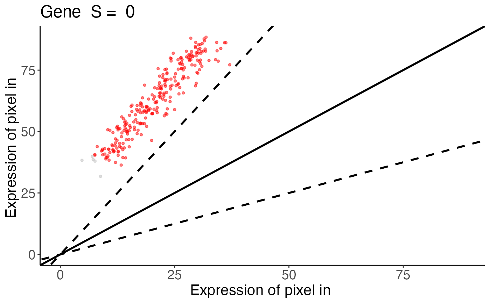

Generates linear regression plot for a given gene.
linearRegression.RdThis function creates a scatter plot comparing gene expression levels between two spatial experiments for a specified gene. It colors data points based on similarity classification and overlays fold-change threshold lines.
Arguments
- input
A list. Results from `spatialSimilarity()`. This includes the similarity table, log-transformed pixel data, and analysis parameters.
- gene
Character. The name of the gene to visualize.
- assayName
A character string or numeric specifying the assay in the Spatial Experiment to use. Default is
NULL. If no value is supplied forassayName, then the first assay is used as a default
Value
A ggplot2 scatter plot displaying gene expression values from two spatial experiments. Data points are colored as follows:
bluePixels classified as similar (within the fold-change threshold).
yellowPixels with greater expression in dataset X than Y.
redPixels with greater expression in dataset Y than X.
greyPixels with gene expression below the threshold in both experiments.
The plot includes:
Solid line:y = x (perfect correlation).
Dashed lines:Fold-change similarity thresholds (upper and lower bounds).
Examples
data(speKidney)
##### Rasterize to get pixels at matched spatial locations #####
rastKidney <- SEraster::rasterizeGeneExpression(speKidney,
assay_name = 'counts', resolution = 0.2, fun = "mean",
BPPARAM = BiocParallel::MulticoreParam(), square = FALSE)
s <- spatialSimilarity(list(rastKidney$A, rastKidney$C))
linearRegression(s, "Gene")
#> Warning: Removed 14 rows containing missing values or values outside the scale range
#> (`geom_point()`).
